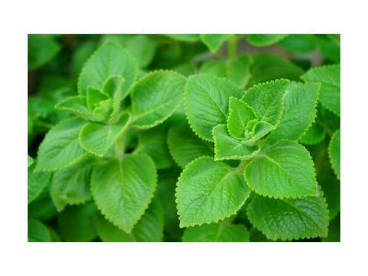

Plectranthus amboinicus
Common Names: Indian Borage, Country Borage, Mexican Mint, Cuban Oregano
Local Name: Karpuravalli / Omavalli (Tamil), Patharchur (Hindi)
Family: Lamiaceae
Origin: Southern and Eastern Africa; naturalized throughout tropics
Plant Type: Perennial succulent herb
Average Lifespan: Perennial; 3–5 years
| Growth Habit | Spreading, succulent herb; fleshy stems; strongly aromatic |
| Plant Size | 30–60 cm tall; spreads 60–90 cm wide |
| Leaves | Thick, fleshy, ovate; hairy; strong camphor-oregano scent; 4–7 cm |
| Flowers | Small, pale purple to white; in terminal spikes |
| Root System | Shallow, fibrous; stems root at nodes easily |
| Climate | Tropical to subtropical; tolerates heat and drought |
| Temperature Range | 15–38°C; frost-sensitive |
| Soil Type | Well-drained; tolerates poor soils |
| Soil pH Preference | 6.0–7.5 |
| Sun Requirement | Full sun to partial shade |
| Water Requirement | Low; drought-tolerant; avoid overwatering |
| Can it Grow in Pots? | Yes; excellent container herb |
| Fertilizer Schedule | Minimal; occasional compost; very low maintenance |
| Common Pests | Generally pest-resistant due to strong aromatic oils; occasional mealybugs |
| Propagation by Cuttings | Stem cuttings root very easily; place in soil or water; roots in 1–2 weeks |
| Immune Support | Leaves used for coughs, colds, and respiratory conditions; widely used in Siddha medicine |
| Digestive Health | Used for digestive issues, flatulence, and as a carminative |
| Anti-inflammatory Properties | Contains carvacrol and thymol; antibacterial and anti-inflammatory properties |
Disclaimer: Information provided is for educational purposes only and not a substitute for medical advice.
Add your field observations here.